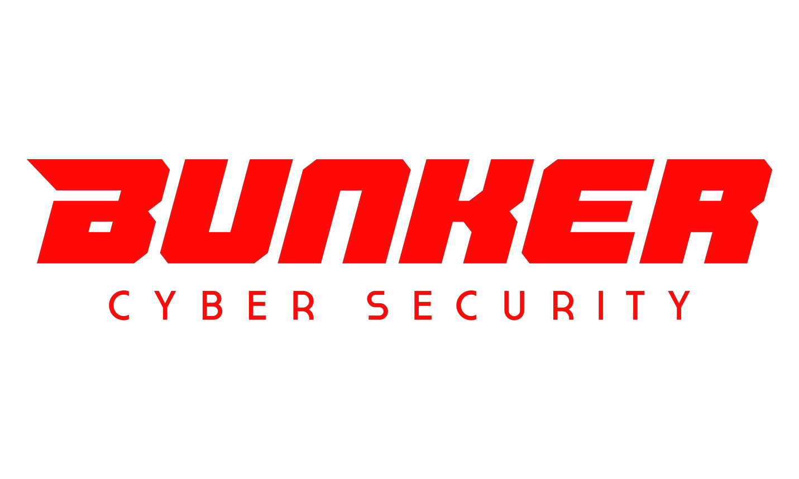
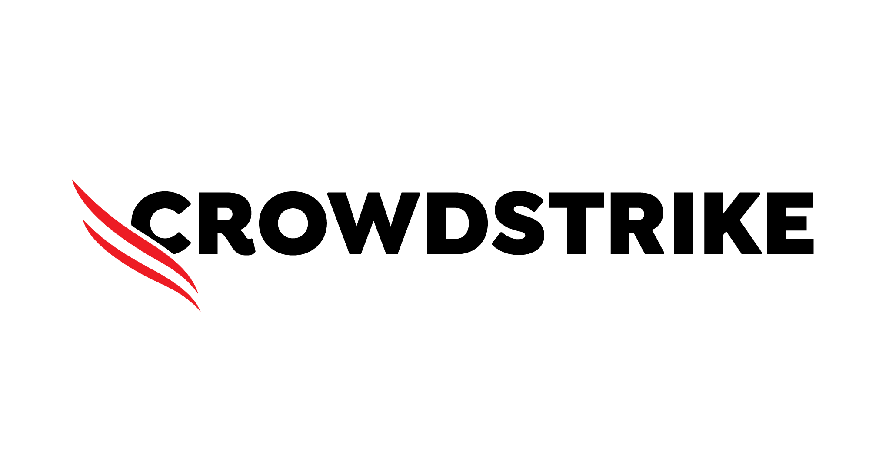

O Fatec Tech Day é parte de uma
iniciativa maior promovida pela Fatec de Araraquara para estreitar os
laços entre a faculdade e o mundo corporativo.
O evento proporciona uma troca de conhecimentos e experiências,
permitindo aos alunos entender as práticas do mercado e se alinharem com
as expectativas, preparando-se assim para se destacarem como
profissionais desejados e capacitados
Um dos pontos-chave do evento é o
NETWORKING, que proporcionará
uma valiosa troca de experiências, além de gerar oportunidades de
parcerias e colaborações futuras.
◾ O que a FATEC Araraquara busca?
A FATEC Araraquara vai aproveitar da oportunidade para reunir novos
requisitos do mercado para adaptar-se melhor com as demandas do
mercado, como o objetivo de capacitar e formar profissionais
qualificados e atualizados com as tecnologias e necessidades do
mercado.
◾ O que os participantes podem esperar do evento?
Os alunos e participantes podem aproveitar do evento para expandirem
suas redes e fazer contato com as empresas participantes. O objetivo
do evento é a criação de oportunidades para ambos os participantes e
as empresas, resultando em uma rede de profissionais e aspirantes mais
conectados e capacitados.
◾ O que as empresas podem esperar do evento?
As empresas terão a chance de conhecer a oferta acadêmica da Fatec e
identificar cursos que possam beneficiar seus funcionários, além de
ter contato com alunos capacitados e motivados que buscam
oportunidades para ingressar no mercado.
Durante o evento, os participantes terão a oportunidade de:
◾ Conhecer as soluções de segurança da informação oferecida pelos
fabricantes com demonstrações práticas nos laboratórios.
◾ Assistir a apresentações no auditório, onde os executivos das
empresas compartilharão suas experiências, discutirão tendências e
responderão a perguntas do público.
◾ Participar de sessões de discussão com os executivos sobre temas
relacionados à carreira e a visão do mercado moderno.
Uma chance única de aprender!
Participe de uma atividade interativa que simula um incidente cibernético!
Com o objetivo de prepará-los para situações reais, orientando sobre ações
cruciais nos momentos iniciais de uma invasão disruptiva.
O evento Fatec Tech Day é realizado em parceria com a Bunker Cyber
Security, empresa especializada em segurança e governança

Além disso, o evento irá contar com a presença de três fabricantes líderes
mundiais em segurança da informação.

A Fatec, com o apoio de seus alunos engajados, convida empresas e
profissionais da cidade e região. O público-alvo principal são os
profissionais de TI e cibersegurança, mas também estendemos o convite a
profissionais da área financeira e de RH, dada a importância da segurança
de dados e governança, especialmente com relação à LGPD.
O evento acontecerá: Dia 25/05/2024, seguindo o horário: 8:00 horas até 18:00 horas,
na Faculdade de Tecnologia de Araraquara.
R. Precide São Martim, 126 - Jardim Santa Clara, Araraquara - SP,
14811-380